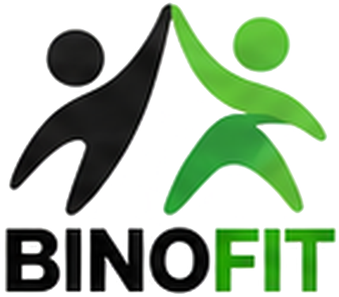

Charte graphique BINOFIT
Application de binôme sportif. Une identité chaleureuse, énergique et simple, pensée pour un usage mobile.
Trouvez votre binôme, dépassez-vous !
Logo et slogan
Le pictogramme montre deux silhouettes qui se tapent dans la main : l’encre pour l’un, le vert pour l’autre. Toujours sur fond clair ; en version inversée, le mot seul.

Le sport, c’est mieux à deux.Version principale (vert sur clair) et version inversée (sur noir).
Couleurs
Le vert BinoFit porte l’action. Le vert vif n’est jamais utilisé pour du texte. Les teintes neutres encadrent l’ensemble.
Action principale, liens, distance.
Texte sur vert tendre.
Illustrations et accents, jamais de texte.
Puces, tuiles d’icônes, avatars.
Titres et texte principal.
Texte secondaire, légendes.
Fond des pages, cartes et champs.
Encadrés et zones secondaires.
Typographies
Poppins ExtraBold
Titres, chiffres de distance, boutons forts.
ABCDEFGHIJKLMNOPQRSTUVWXYZ 0123456789
Inter Regular
Textes, formulaires, interface.
abcdefghijklmnopqrstuvwxyz 0123456789
Caveat Bold
Accroches manuscrites, une par écran au maximum.
à deux, c’est mieux !
Icônes
Icônes au trait, 2 px, coins arrondis, dans une tuile vert tendre. Sélectionnée : tuile verte pleine, icône blanche.
Running
Vélo
Tennis
Yoga
Musculation
Natation
Accueil
Carte
Messages
Profil
Recherche
Activités
Les pictogrammes réels sont à reprendre depuis la maquette (les libellés ci-dessus sont des repères).
Composants
Rayons : 14 px pour les boutons, 20 px pour les cartes, 999 px pour les puces. Cibles tactiles de 44 px minimum.
Illustrations et avatars
Style illustré, trait doux, sportifs souriants en tenue noire et verte, décor de parc urbain en aplats de vert. Avatars en buste sur rond vert tendre.
Direction artistique
Ton : tutoiement, phrases courtes, verbes d’action (« Trouve », « Écris », « Lance-toi »).
Espace : fonds clairs, cartes blanches, beaucoup d’air entre les blocs.
Hiérarchie : un seul bouton vert plein par écran, la distance toujours mise en avant.
Le sport, c’est mieux à deux.